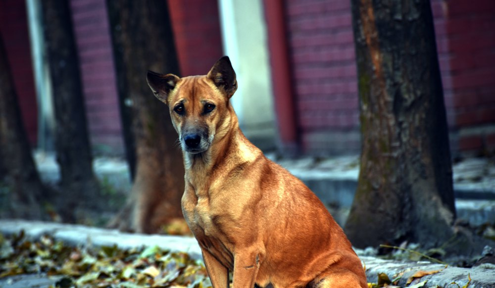
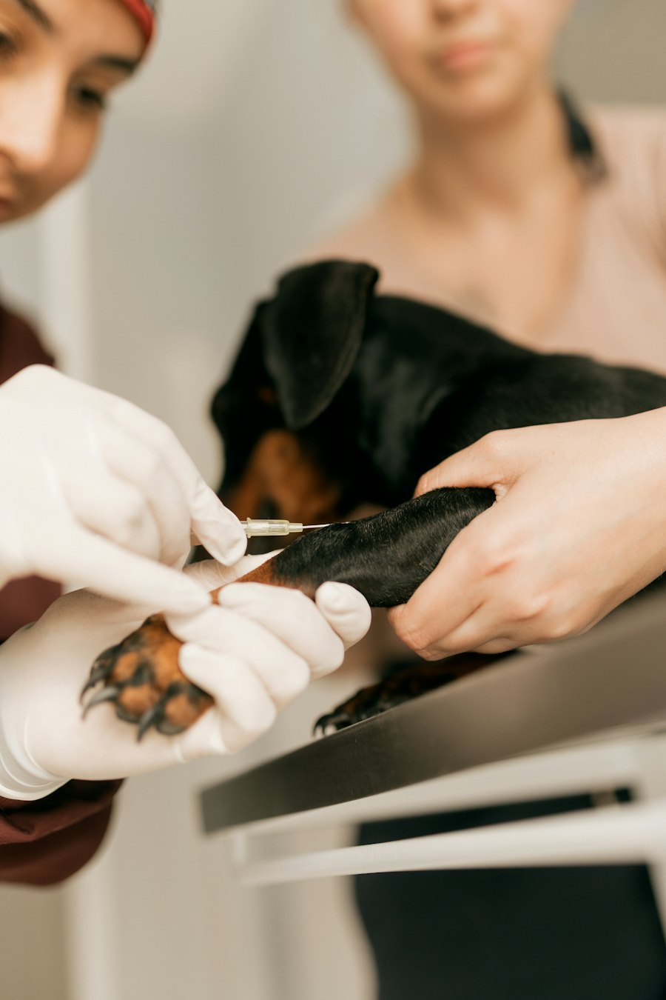

Urgent
UrgentEye looks swollen and cloudy. Found him near Road 27. Needs a clinic trip.
ওরা কথা বলতে পারে না, আমরা পারি।
They have no voice, so we lend them ours.
See a street animal that needs help? Post a photo with the area. Volunteers in that area see it and go to help.

Add a photo of the animal, the area and a short note.

Volunteer teams in that area see the post. They go to the animal and post an update.

Top up PetPoints, send some to a volunteer, or buy food and supplies in the shop.
UrgentEye looks swollen and cloudy. Found him near Road 27. Needs a clinic trip.
 Needs vet
Needs vetOn the wall behind Gulshan 2 market. Eating fine but her ear is torn.
 Being helped
Being helpedTiny white kitten crying under a parked CNG in Sector 7.
Dhanmondi and nearby areas
UrgentEye looks swollen and cloudy. Found him near Road 27. Friendly, let me sit next to him.
 Being helped
Being helpedটাউন হল বাজারের সামনে রোজ দুপুরে এই মেয়েটা ঘুমায়। খুব রোগা।
 Urgent
UrgentThe cat colony behind the Moghbazar flyover is up to five now.
 Needs vet
Needs vetNight round done. 14 dogs fed between Mirpur 10 and 11.